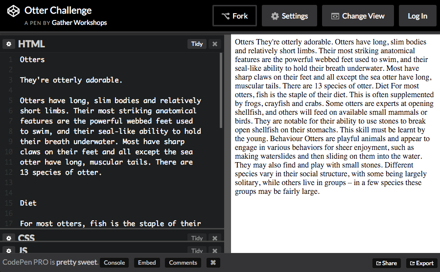

Coding Content
Using HTML to construct page content
HTML With Otters
Open this link in a new tab: Otter Challenge
Keep it open! We are going to be using HTML
to make it look way better.
CodePen Editor

CodePen shows us code on the left, and output on the right.
Otter Page Demo
See the Pen Otter Challenge Demo by Gather Workshops (@gatherworkshops) on CodePen.
Using code, we will transform our output to look like this.
Headings
Add heading tags before and after “Otters” on the first line.
<h1>Otters</h1>
<h1> says “start the heading here”
</h1> says “end the heading here”
Your “Otters” heading should now be big and bold.
Subheadings
Now make Diet and Behaviour into subheadings.
<h2>Diet</h2>
h1 is the main page heading
h2 is a subheading under an h1
Paragraphs
Now use <p> tags to split up your paragraphs.
<p>
Otters have long, slim bodies and relatively
short limbs. Their most striking anatomical
features are the powerful webbed feet used
to swim, and their seal-like ability to hold
their breath underwater.
</p>
Put a <p> before each paragraph,
and a </p> after each paragraph.
Create a new subheading
At the bottom of your code, add a new subheading called “Photos”
<h2>Photos</h2>
We will add a series of images below this heading.
Image Tags
Add an img tag to the very bottom of your code:
<img src="#" height="100">
src stands for “source”
Replace the # with a link to an image online.
height is the height of the image
This is optional, it is the height in pixels.
Image Source
Find an image online, and copy the link to it.
Replace the # as the src value, using paste:
<img src="http://place.com/photo.jpg" height="100">
Find and add at least two more images.
Final Result
See the Pen Otter Challenge Demo by Gather Workshops (@gatherworkshops) on CodePen.
Your own output should now look something like this.
Stuff We Covered
- Headings
Biggest is h1, smallest is h6, and size is based on heading importance - Paragraphs
Split our content up into manageable pieces. - Images
Don’t have a closing tag, and use thesrcattribute to define an image.

Coding Content: Complete!
Great, now it’s time to do some design…
Loading...